Seismic waves
Monday 04 November 2019
@morphology @seismic @ESH @GEOLOGY @YEAR1
Two broad categories: Surface and Body
| Wave | Solids | Liquids | Dispersive | Type | Arrival position |
|---|---|---|---|---|---|
| L | y | x | y | Surface | |
| R | y | x | y | Surface | |
| P | y | y | x | Body | 1 |
| S | y | x | x | Body | 2 |
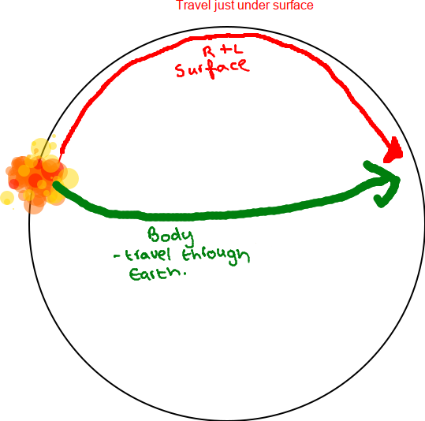
@body_waves @surface_waves
Dispersiveness
Non @Dispersive:
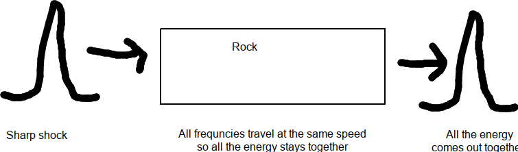
P Waves
@P_waves
- P= Primary. Travel fastest → first to arrive
- Push/ Pull Compression/ stretch
- Everything returns to the same place (elastic deformation)
- Non dispersive
- Solids and liquids
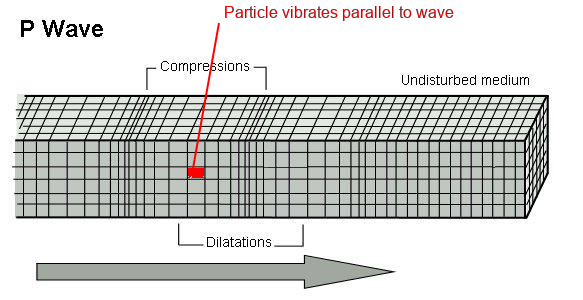
S waves
@S_waves
S=Secondary/ Shear
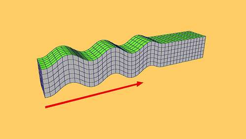
- Particles move at 90° to travel direction (but this can be vertical or horizontal)
- Non dispersive
- Only travels through solids
Rayleigh
- Also expressed as 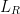
- Move in an elipse
- Particle rotates in an anticlockwise/ retrgrade elipse
- Further down rocks get more dense and sound travels faster
- Dispersive: Long wavelength @rayleigh_waves travel faster than short ones -> long arrive first
Love Wave
Expressed as 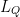
@Love_Waves
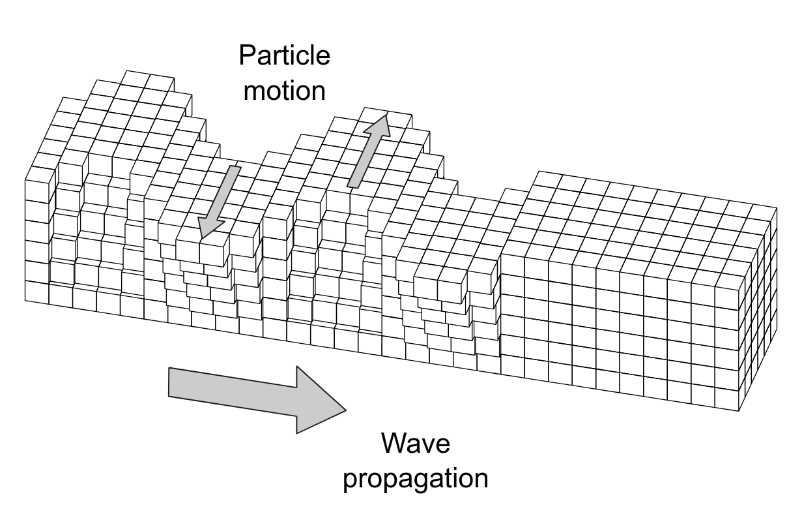
- Side to side motion
- Motion parallel to surface
- Gets weaker and deeper
- Dispersive
- Only solids (because it's a type of S wave)
- The amplitude gets lower with depth
Refraction
@seismic
@Refraction when the velocity of the wave increases the wave bends away from the normal
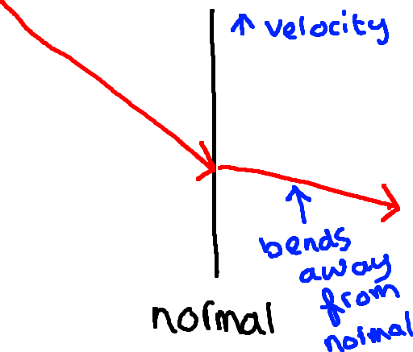
@Refraction when velocity decreases the wave bends towards the normal
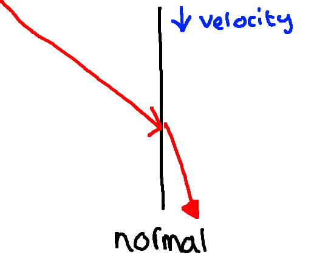
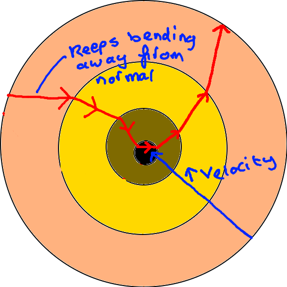
Wave velocity increases with depth, so the @seismic_waves keep bending away from the normal.
From the shape of the @travel_time_curve we can work out the velocity of the wave and therefore the material that it is travelling through.
Shadow Zones
A @shadow_zone is a zone where there are no P or S waves
There are no @S_waves because they can't travel through liquids, which was the first indication of a liquid outer core
There are no @Pwaves because when they do pass through the core they get refracted away due to the change in velocity
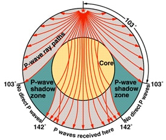
These shadow zones are between 105° and 142°
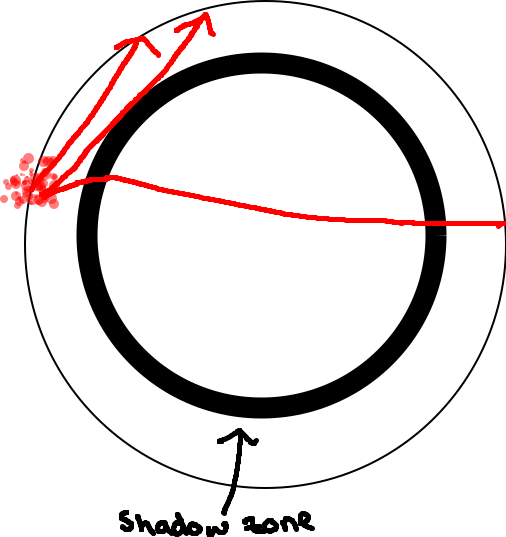
But there are also shadow zone layers with a rapid reduction in velocity with depth.
Fast zones
- @Fast_Zone ≠ Shadow Zones
- Rapid increase in velocity with depth
- Deeper waves spend more time in the fast zone
- AKA the @Lehman_Discontinuity
- 220km thick
- Only generally beneath continents and not oceans
Mode Conversion
@mode_conversion
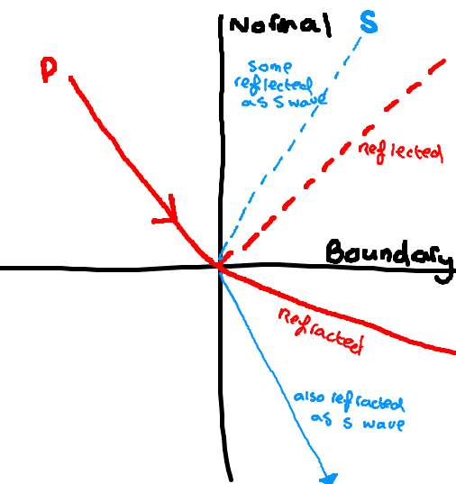
- @Mode_Conversion happens when the wave comes in at an angle and causes some of the P energy to turn into a transverse wave.
- Works the other way around as well: P🔄️S
- At solid → liquid boundaries, all waves become P waves
Naming seismic waves
| Wave | Mantle | Outer Core | Inner Core | |
|---|---|---|---|---|
| Defracted P | P | K | I | |
| Defracted S | S | - | J |
The name of a wave is its path:
Defracted waves:
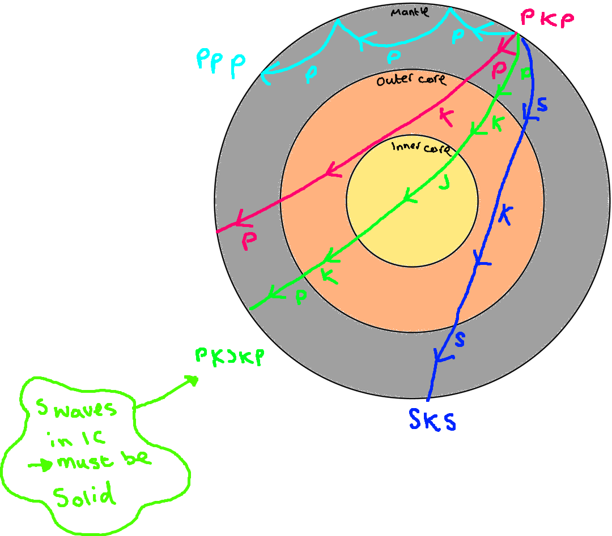
PPP: waves det defracted so they can get to places without ever bring intercepted by the core
PKJKP: Shows that the inner core must be solid
SKS: S wave converted to P in the inner core
See: seismic waves in solids and liquids
Reflected Waves:
| Reflection | Name |
|---|---|
| Core/ Mantle boundary | c |
| Inner/ Outer core boundary | i |
Note that these are lowercase letters ≠ refracted waves.

Wave separation
Waves travel at different speeds → they get separated over time and disperse
This can tell you how deep the earthquake is.